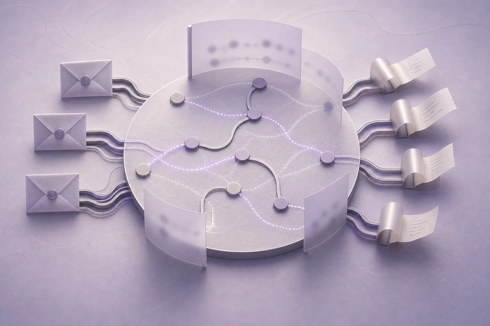
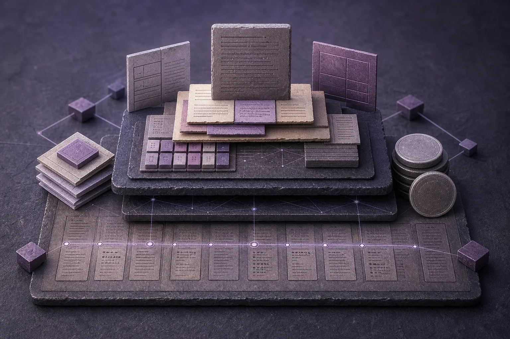

เพราะมันคือฐานของทั้งระบบ ทุกการเปลี่ยนแปลงจึงต้องผ่านการถกเถียงและกลั่นกรองอย่างรอบคอบ
ใครๆ ก็เสนอแนวทางการพัฒนาได้ ปัจจุบันมีหลายข้อเสนอ แต่ทั้งหมดจัดกลุ่มได้เป็น 5 หมวดใหญ่
privacy: ความเป็นส่วนตัว
หมวดนี้มุ่งลดการเปิดเผยข้อมูลโดยไม่จำเป็น และทำให้การติดตามเชื่อมโยงความธุรกรรมทำได้ยากขึ้น

smart contract & script:
กำหนดเงื่อนไขการใช้เงิน
หมวดนี้ทำให้ Bitcoin สามารถพลิกแพลงการใช้งานมากขึ้น
efficiency: ประสิทธิภาพ
หมวดนี้ทำให้เครือข่ายทำงานได้มีประสิทธิภาพมากขึ้น ใช้ข้อมูลน้อยลง ลดการเก็บข้อมูลที่ไม่จำเป็น ทำให้ทุกคนรันโหนดได้ง่ายขึ้น
security: ความปลอดภัย
หมวดนี้มุ่งเพิ่มความปลอดภัยของระบบและโปรโตคอล ทั้งในแง่การเตรียมรับภัยคุกคามใหม่ การปิดช่องโหว่ และการเสริมความแข็งแกร่งให้โหนดหรือเครือข่ายสามารถต้านทานโจมตี
data & tokenization:
การบันทึกข้อมูลและออกสินทรัพย์อื่น
หมวดนี้มุ่งใช้เครือข่าย Bitcoin เป็นฐานสำหรับการบันทึกข้อมูลและสร้าง token ที่เป็นตัวแทนของสินทรัพย์อื่นบนเครือข่าย Bitcoin

ความสวยงามของโปรเจค opensource คือทุกคนสามารถผลักดันแนวทางที่ตัวเองเชื่อ และจะมีแต่สิ่งที่ทุกคนยอมรับเท่านั้นจึงจะถูกนำไปใช้จริง